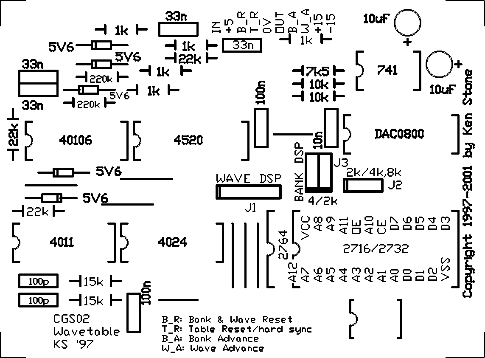
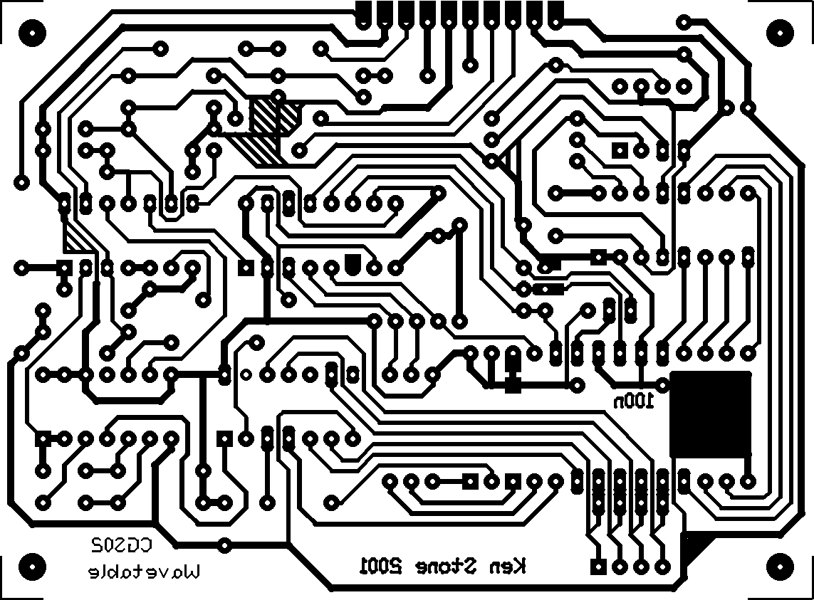

|
Wave Table for music synthesizers. Please note that there are several version of the PCB for this module, so not all comments in this article are relevant to all boards. This module is loosely based on the digital portions Digisound VCDO. There is no onboard VCO. Originally, provision was made in the design to increase ROM size from the out of date 2716 to the equally out date TMS2532. At the moment one of my wave table modules is running a copy of the original Digisound ROM while the other has been modified to take a 2732 which contains an experimental table I put together. Various changes were made to the design, which went untried from paper to PCB. I certainly wasn't prepared to lash this one up by hand. The only thing found lacking when construction was finished was a capacitor between the switches and the Bank and Wave inputs as there was undesirable interaction between the inputs and switches when a switch was pushed. These capacitors have not been added to any of the PCBs released so far. Bank and Wave tables can be selected either by a pulse on the appropriate input, or by pushing one of the front panel switches. The currently selected Bank and Wave are displayed by two single digit led displays. The displays used are a HP type, 5082 7340, which accept binary as inputs and include all driving circuitry onboard. A local distributor dumped the last of his stock of these devices some time in the early eighties, so I imagine they might be hard to buy now. The examples I have were picked up second hand, here and there over the last decade. Some I used while similar, were not identical, bearing the code 1990 0330. Also of interest are the way the switches have been done. They look like membrane switches in that there is no visible cutout on the front panel for them, rather just an area marked on the artwork. The "tactile" switches themselves were salvaged from a VCR, and have been mounted on a PCB in such a way that they protrude through the aluminium panel cutouts, with their actuator pressed hard up against the back of the laminated paper panel artwork. Small compression springs have been used as spacers for the PCB, allowing the switches to be adjusted to the correct height for them to respond to someone pressing on the panel artwork. These springs are not visible in the photo, but the Nyloc adjusting nuts are, on the far side of the blue PCB. This was never intended to be any more than a project for my own synthesizer. I didn't even advertise the spare boards for sale, but due to popular demand, I sold the spares from the first batch, then had more runs made each with some changes. There are now three versions of this board in circulation. Identifying your board
Overview To understand what the inputs do, here is a brief description of the 2716 ROM and how it is addressed. The ROM contains 32 different waveform tables, each 64 bytes long. The contents of any one of these tables is sequentially addressed by the wave step counter which runs at high frequency (64 times the required audio frequency - effectively 6 octaves up). The tables themselves are arranged in a 4 x 8 array of "banks" and "waveforms". Each "bank" contains a set of eight waveform tables that are usually related in tonal quality. Each waveform in a bank can be selected sequentially by applying pulses to the W_A Wave Advance input. Each bank of waveforms can be selected sequentially by applying pulses to the B_A Bank Advance input. If a 2532 or 2732 ROM is used, the number of banks is doubled to eight. If using the CGS02 version of the board, a 2764 can be substituted for the 2732. Instead of adding another set of waveforms, this in fact doubles the resolution of the waves to 128 step. Due to needing to remain compatible with the other ROM types, the addressing is a little odd. Effectively there are two 4k blocks arranged in identical fashion to the 2732 version, but with the first half of each waveform in the lower block, and the second half in the upper block. At the moment there are no available ROMS for this. Experimenters could even put in a 27128, though the A13 address line (pin 26) is simply tied to the positive rail. You would need to cut the track, and run a wire to the Q4 output of either the bank or the wave counters. That would double the number of waveforms available. There is provision on the PCB for this cut to be made easily. Connections Place the board in front of you with the 741 in the top right hand corner. When viewed like this, the connections to the module are:
For those of you wanting to use a 2732, as distinct from the 2532 on the earlier versions of the board (Versions 1 and 2), a couple of modifications are required. Isolate Pin 21 of the ROM by cutting the PCB track. Isolate Pin 18 of the ROM by cutting the PCB track. Run a wire from Pin 18 of the ROM to Pin 20 (0V). Run a wire from Pin 21 to the center pin of the 4k/2k Jumper. Make sure the left hole of the 4k/2k Jumper is linked to the center hole. The right hole should not be connected to anything. Note that this modification prevents a 2716 from being used.
Schematic of the CGS02 version. The previous versions are similar.
PCB overlay for version 2 of the wave table. Not to scale. Note: The overlay is incorrect in that it specifies a 2732. The actual device needed is a TMS2532.
PCB overlay for version 3 (CGS02) of the wave table. Not to scale. Notes:
Parts list This is a guide only, and covers just the components on the PCB. Parts needed will vary with individual constructor's needs. I am no longer selling this PCB or ROMs. Can't find the parts? See the parts FAQ to see if I've already answered the question. Also see the CGS Synth discussion group. 200 DPI B&W printable panel artwork. 300dpi printable PCB artwork for home etching (right click and save).   Article, art & design copyright 1999 by Ken Stone
| ||||||||||||||||||||||||||||||||||||||||||||||||||||||||||||||||
{kind=link}